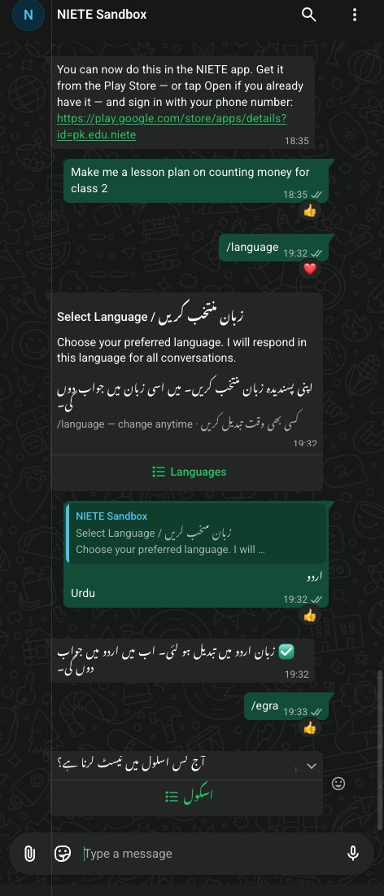
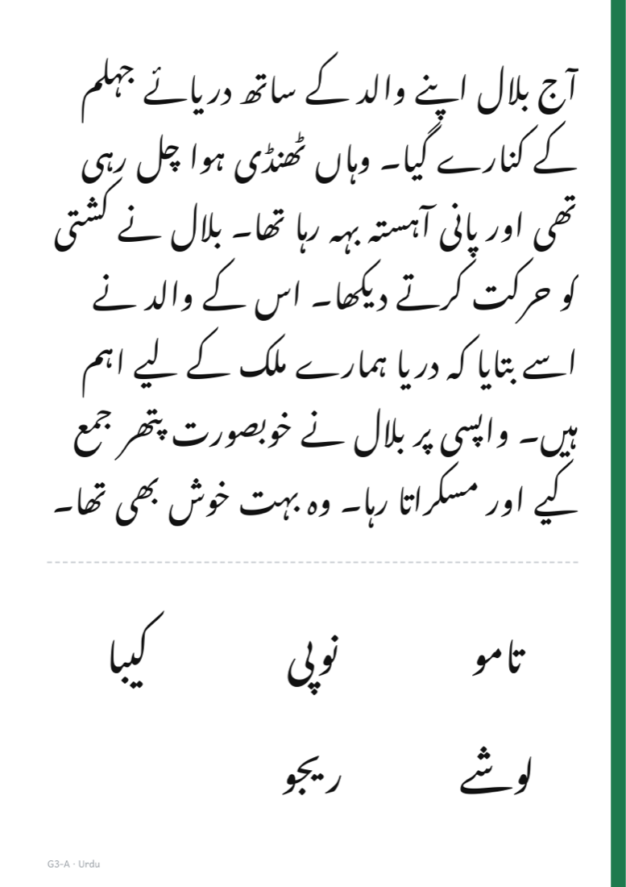

Coach's phone · WhatsApp

In the child's hands · printed card
Every screen below is a real WhatsApp screenshot, recorded on 3 Oct 2026 against the NIETE sandbox bot: one coach tests one child from /egra to a saved check. The child reads from a printed card, shown beside the phone; WhatsApp only records. The child is synthetic: a generated voice, an invented name, a rendered strip with a known answer key.


Checked against the RTI EGRA Toolkit (2016), the Core EGMA instrument (2014), USAID's Sindh and Uzbekistan studies and ASER. The reading follows EGRA closely. The maths borrows from EGMA but is our own short form. The full batteries take 15–20 minutes each, so this is an EGRA/EGMA-derived check, not EGRA scores.
| Question | How the standard does it | Ours | Verdict |
|---|---|---|---|
| Reading passage | About 60 words, grade level, from the national textbooks | Grade 3: the May 2026 Rawalpindi passage, word for word (60 words) | matches |
| One passage or one per grade | The toolkit is silent. Sindh 2014: the same Grade 2 passage for Grades 3 and 5, plus a harder Grade 4 passage for Grade 5 | Grade 5: the May passage plus a written continuation (longer, not shown to be harder) | check difficulty |
| Item order | Randomised once at design; every child reads the same sheet; never shuffled per child | Fixed per form; only the children are drawn at random | matches |
| No drift | A printed, fixed instrument | Pre-generated, frozen and versioned; nothing generated at test time | matches |
| Comprehension | 3–5 questions; the passage is removed before questioning (2016 core) | Urdu 3, English 2; the card is not turned over | add 1 English question; decide on the card |
| Retest form | Built, piloted and equated before comparing a child's two scores | Form B matched on text measures, not piloted | pilot-equate first |
| Fact fluency | Two separate 60-second runs, addition and subtraction, 20 items each, answers spoken | One mixed 60-second run (Grade 5 adds × and ÷) | variant |
| Two-digit sums | 5 + 5, oral, paper optional | 4 written on the strip | variant (ASER-style) |
| Word problems | 6, read aloud by the assessor | 1, read aloud by the coach | too few for a score |
| The May Rawalpindi maths | A levelled ladder (14+1 … 72 ÷ 6), item by item | None of its items | not comparable |
| Showing the passage | A printed, large-font sheet in front of the child | The printed card; WhatsApp only records | matches |
Open decisions for the operator, Sabeena and Sameer: maths (keep and label, move toward Core EGMA, or use the May levelled items), a third English question, the card face-down before questions, the Grade 5 passage, and Form B equating. See D2 in the register below.
Every recording from the May 2026 Rawalpindi study: 185 children, Grades 1–5. Each AI mark is compared with the enumerator's tablet mark for the same child and item. The human floor is how often a QA reviewer, re-listening to the same children, agreed with the enumerator.
The target is about five minutes a child, 25–30 for five. Each bar is one child from the five-child sandbox run: the bot's own time, the child's speaking time, and the coach's check.
That run sent the voice notes back to back, which added about 4 minutes of pacing and polling for five children that a real visit does not have (L22). At real speed the projection is 35.4 minutes. Not in the bars: the coach's spoken cues, handing over the card, walking children in and out.
The register the team works from. Steps above link here where an issue shows up.